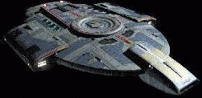

|
|
Flotta Stellare - U.S.S. Defiant NX-74205 |
|
|
|  |
Prototipo della classe sperimentale Defiant,
classificata ufficialmente come nave scorta. Dal 2366
sono iniziati dei lavori di ampliamento che l'hanno trasformata in una nave
piccola, veloce e fornita di armi assai potenti con lo scopo di fronteggiare la
minaccia dei Borg.
La Flotta Stellare ha abbandonato in seguito il progetto di sviluppo di una classe di
navi quando la minaccia dei Borg è
diventata meno urgente e quando, durante i voli di prova, sono state
identificate alcune anomalie.
Nel 2371 la Defiant è
stata assegnata a Deep Space Nine
per fronteggiare il Dominio e,
in base ad un accordo con l'Impero Romulano,
la nave è equipaggiata con un dispositivo
di occultamento romulano che può essere utilizzato solamente nel quadrante
Gamma (The Search).
Questa nave ha degli alloggi molto angusti, un'infermeria di dimensioni ridotte
e può trasportare almeno due shuttle (The
Search).
Nel 2375 la prima Defiant
viene distrutta dai Breen nel sistema Chin'Toka
e subito dopo rimpiazzata con la Sao Paulo,
una nave gemella in grado di resistere alle nuove armi dei Breen.
La Sao Paulo viene affidata ancora al
capitano Sisko, con la dispensa da parte della Federazione che il nuovo capitano
possa ribattezzare la nave a propria discrezione. Immediatamente Sisko
ribattezza la Sao Paulo in Defiant
(The Dogs of War).
Entrambe le gondole, estremamente compatte rispetto alle altre navi della Flotta Stellare, sono state inserite all'interno dello scafo, sotto la stessa
corazzatura che lo protegge; questo per evitare di fornire al nemico un facile
bersaglio per rendere inoperativa la nave e diminuire le ripercussioni sul
nucleo di curvatura dovute al loro danneggiamento.
Cantieri di produzione
Cantiere navale di Antares IV.
Dimensioni e massa
170,68 metri di lunghezza, 134,11 metri di larghezza, 30,1 metri di altezza, 4
ponti.
355.000 tonnellate.
Categoria
Nave scorta (designazione ufficiale, si tratta in realtà di una nave da
guerra).
Capacità
40 membri di equipaggio circa (nel 2373 salgono a 50), 150 persone come limite
massimo in caso di evacuazione di emergenza.
Propulsione
Nucleo a curvatura con due gondole di classe 7 (One
Little Ship), due sistemi ad impulso. Nucleo a curvatura miniaturizzato con
cristalli di keltrinio al posto del dilitio. Il motore della Defiant non
produce effetti sulla struttura del subspazio.
Velocità massima: Warp 9,982 per 12 ore.
Difesa
Scudi deflettori stratificati formati da 16 strati indipendenti per un totale di
56 GW. Armatura ablativa, realizzata in una lega particolare che permette di
dissipare una maggiore quantità di energia dei colpi subiti dallo scafo.
Armi
Quattro cannoni phaser a impulso,
due lanciasiluri. I phaser hanno
una potenza di fuoco di di 22.6 MW ciascuno e di 50.3 MW in caso d'emergenza
deviando tutta l'energia inutilizzata sui di essi. I quattro cannoni phaser
posizionati frontalmente sono in grado di utilizzare in ogni attacco emissioni
di energia con fluttuazioni variabili delle frequenze, in modo da impedire che
il nemico adatti i propri scudi. Espressamente realizzati per fronteggiare la
minaccia Borg, i cannoni phaser ad impulso
hanno dimostrato tutta la loro efficacia anche contro il
Dominio.
Shuttle
Shuttle di tipo 10.
Disposizione dei servizi a bordo
Ponte 1: plancia, sala teletrasporto 1, serbatoi di deuterio, condotte di sfogo del
plasma, sala tattica, cannone phaser ad impulso (2), primo ponte sezione tecnica,
alloggi ufficiali ed equipaggio, rete di sensori dorsale.
Ponte 2: motori ad impulso, secondo ponte sezione tecnica, nucleo del computer,
laboratorio medico/scientifico, infermeria, bobine curvatura, mensa, sensori di
tiro, sala teletrasporto 2, sala teletrasporto 2, alloggi ufficiali ed
equipaggio.
Ponte 3: motori ad impulso principali, deposito siluri di poppa, hangar navette, contenimento antimateria, nucleo del
computer, piattaforma hangar, meccanismi hangar, stiva di carico (4), teletrasporto
merci, porta stagna principale, tubo lanciasiluri, piastra d'atterraggio,
sensori LWR, deflettore di navigazione, bobine di carica phaser, bobine di
curvatura, manutenzione shuttle.
Ponte 4: bobine curvatura, deposito siluri di prua e poppa, piattaforma hangar e
portelli esterni, meccanismi
hangar, tubi lanciasiluri di prua e poppa, piastra d'atterraggio, rete di
sensori ventrale, deflettore di navigazione, cannoni phaser ad impulso (2),
emettitore raggio traente principale.
|
||||||||||||||||||||||||